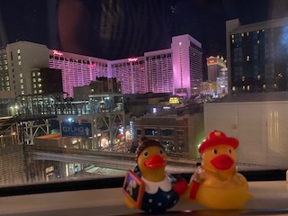
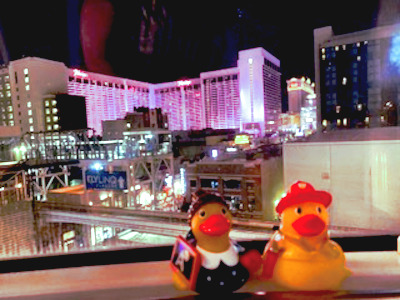

Editing Images
Image 1
 Cropped the image, scaled the image, adjust brightness and contrast, adjusted color balance, adjusted shadows/highlights.
Image 2


Rotated the image, cropped the image, scaled the image, adjusted color hue, adjusted exposure and black point.
Image 3


Rotated the image, cropped the image, scaled the image, adjusted color balance, adjusted brightness and contrast, adjusted saturation.
Image 4


Cropped image, scaled image, adjusted color balance, adjusted color temperature, adjusted brightness and contrast.
Image 5


Cropped image, scaled image, adjusted exposure, adjusted contrast, adjusted color balance.